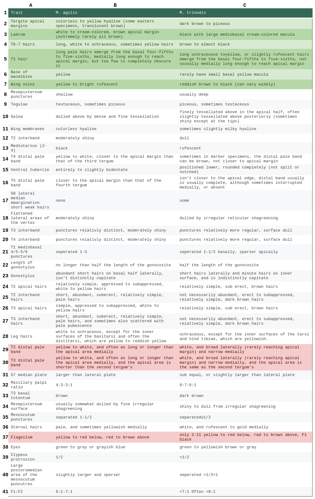
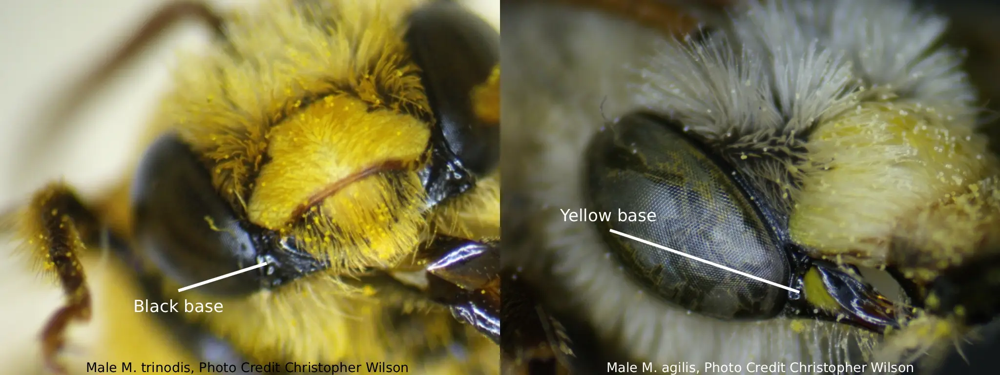
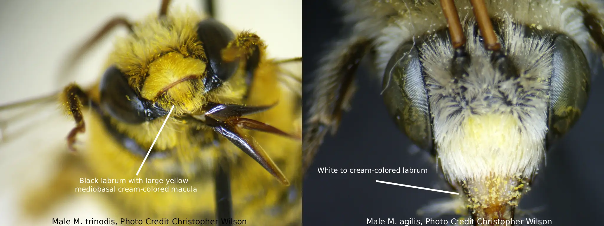

Melissodes agilis

Scientific Classification
Kingdom
Phylum
Class
Order
Family
Tribe
Genus
Subgenus
Species
Binomial Name
Melissodes agilis
Melissodes agilis Cresson, the agile long-horned bee, is by far the most abundant North American species of Melissodes (Laberge, 1961). Like all Melissodes, male M. agilis have long antennae, and the females have short antennae in comparison (see "Genus" page for more information). This species resides in, and is the type species of, the subgenus M. (Apomelissodes) Laberge. Both sexes of M. agilis can resemble other species in M. (Eumelissodes) Laberge, although the females can be somewhat easily distinguished by their red thoracic hairs, red to reddish brown wing veins, dulled galea, and ochraceous scopal hairs (Laberge, 1961). Males can be distinguished from that of other M. (Eumelissodes) Laberge by their dulled galea, yellow macula on mandibles, entirely yellow clypeaus, short first flagellar segment, pale ochraceous to red thoracic hairs, and hyaline tergal margins (see “Description and Identification” for more information on both sexes) (Laberge, 1961). M. agilis is seemingly an oligolege of the tribes Astereae and Heliantheae (Robertson, 1926), however, recent studies have shown that M. agilis was also an important pollinator of soybeans (Wheelock, 2014).
Description and Identification
Based on Laberge's (1961) description, Melissodes agilis are medium sized setacouse bees. Females range from 10 to 13 millimeters in length and 3.5 to 4.5 millimeters in width (width measured at the widest portion of the metasoma). Males are a bit smaller, only being about 9 to 12 millimeters in length and 3 to 4 millimeters in width (width measured at the widest portion of the metasoma). The female's first flagellar segment is on average 1.81 times the size of the second flagellar segment (standard deviation 0.027). The males are the opposite where the second flagellar segment is on average 7.37 times the size of the first flagellar segment (standard deviation 0.164). Female wing length is 3.46 millimeters on average (standard deviation 0.159 millimeters), and male wing length is 3.20 millimeters on average (standard deviation 0.217 millimeters). Females have an average of 13.45 hamuli (standard deviation 0.223), while males have an average of 11.65 (standard deviation 0.274).
Female
According to Laberge (1961), the description of female M. agilis is as follows: the integument is black, differing at the eyes, which are a gray to bluish gray and rarely greenish or black with violet reflection; the wing membranes, which are completely hyaline; the wing veins, which are red to reddish brown; the apical half of the mandibles, which are rufescent; the underside of flagellar segments 3-10 and often the apex of the second, which are rufescent; the distitarsi, which is also rufescent; the pterostigma, which is yellow to red; and the tibial spurs, which can appear yellow to red. The clypeus has small regular punctures that are often round and separated by one to half the diameter of a puncture. The surface of the clypeus is dulled by coarse and regular reticular shagreening and often has a short median horizontal carina in the apical half. The clypeus slightly protrudes beyond the eyes in profile view, but by no more than half an eye’s width. The supraclypeal area is similar to that of the clypeus, but it’s often impunctate medially. The galeae is dulled above by dense and fine tessellation. The four maxillary palpal segments decrease in length from basal to apical in a ratio of about 4.5:3.5:3.3:1.0. The flattened lateral areas of the vertex have small round punctures that are separated on average by one to three diameters of a puncture. The surface of the vertex is dulled by irregular reticular shagreening. The mesoscutum is shiny and sparsely or not at all shagreened and has deep round punctures that are separated by one to half the diameter of a puncture. The large posteromedian area of the mesoscutum has punctures that tend to be slightly larger and more sparse. Punctures of the scutellum are similar to the punctures on the mesoscutum, but they are slightly more crowded. The metanotum is dulled by very fine reticular shagreening, and has punctures that are half the diameter of the punctures on the scutellum. The punctures are mostly separated by one to half the diameter of a puncture. The propodeum’s dorsal surface is reticulorugose and is especially coarse basally, and the posterior surface has coarse punctures except for the upper triangle. The lateral surfaces of the propodeum are similar to the posterior surface but the punctures are more crowded and the surfaces are dulled by dense regular tessellation. The mesepisternum’s lateral surface has punctures that are large, shallow, and separated mostly by half a puncture diameter or less. The surface is shiny and unshagreened or if so then finely.
The first tergum’s basal three-fifths or slightly less is dulled by fine tessellation and punctate The punctures are round, shallow, and separated mostly by one to two puncture diameters; punctures can extend to the apex at extreme sides. The apical area of the first tergum is impunctate with a shiny surface that is extremely finely reticulotransversely shagreened. The second tergum’s basal zone is shiny but has fine reticular shagreening and tiny round punctures that are separated by one to half a puncture diameter. The interband zone of the second tergum is dulled by reticulotransverse shagreening and has small irregular punctures that are separated by one to three puncture diameters; these punctures are sparser medially than in the lateral raised areas. The apical area of the second tergum has a moderately shiny surface that is dulled with fine reticulotransverse shagreening and is impunctate, or if punctate, then it has minute punctures that are no wider than the base of the hairs that arise from them. Each of these punctures are separated by two to four puncture diameters. Both terga 3 and 4 are similar to tergum 2, but the punctures of the interband zone are relatively more distinct and abundant, the apical zone is also smaller or absent. The pygidial plate is broadly V-shaped, with a rounded apex.
M. agilis has a somewhat small range of setal variation, the most common description of which follows. Facial and genal area hairs are pale ochraceous to yellow and the vertex is yellow to bright rufescent (the vertex will sometimes have brown hairs, if so, they are never abundant). The sides of the thorax are pale ochraceous, and the top is ochraceous to bright rufescent. The first tergum has long, ochraceous to yellow or slightly rufescent hairs basally and laterally, except for the apical area which is glabrous or has very sparse, small, appressed brown to yellow hairs basally and laterally. The second tergum’s white to yellow basal pubescent band is long and the interband zone has short, appressed to subappressed, relatively simple, white to pale hairs. The distal pale band of the second tergum is yellow to white, broad laterally (very rarely reaching apical margin) to narrow medially, and usually it’s narrowly interrupted medially. The apical area of the second tergum has relatively simple, appressed to subappressed, white to yellow hairs that obscure the surface, be it not entirely. The third tergum is similar to the second but the basal tomentum is dark brown as well as the hairs on the interband zone, the distal pale band isn’t interrupted, and the apical area is shorter. The fourth tergum is similar to the third, but the pale distal pubescent band reaches the apex across the entire tergum and occasionally has a minute apicomedial area of brown hairs. Terga 5 and 6 are dark brown except for white to yellow tufts of hair at extreme sides. The sterna is pale reddish brown at extreme sides, and darker reddish brown medially. The legs are pale white to yellow except for the fore tarsi and often middle basitarsi on their outer surfaces, which are brown; the fore and middle tibiae on the outer surfaces near the apices, which are brown; the apices of the outer surfaces of the hind basitarsi and often the areas on and surrounding the basitibial plates, which are brown; the inner surfaces of the hind basitarsi, which are red to reddish brown; and the scopal hairs, which are ochraceous to yellow.
Male
According to Laberge (1961), the description of male M. agilis is as follows: The integument is black, differing at the eyes which are green to grey or greyish blue; the wing membranes, which are completely hyaline; the wing veins, which are yellow; the base of the mandibles, which are yellow to cream colored; the labrum, which is white or cream-colored and the apical margin of the labrum, which is brown, very rarely all brown; the flagellum, which is red to yellow below and dark red to brown above; the distitarsi, which is rufescent; the tegulae, which is usually testaceous and sometimes piceous; the apical margins of the terga, which are colorless to yellow hyaline, although in some eastern individuals, they can be a translucent brown; and the tibial spurs that can appear yellow to white. The clypeus protrudes beyond the eye by about half the width of an eye in profile view. The first flagellar segment is about one-sixth to one-seventh the maximum length of the second segment (as stated above), and the penultimate segment is about three times as long (maximum) as it is wide (minimum). The flagellar segments do not have longitudinal lateral depressions. The four maxillary palpal segments decrease in length from basal to apical in a ratio of about 4:3:3:1. The remainder of the sculptural characteristics are the same as the female described above except as follows: the clypeus’ short surface is often moderately shiny; the mesepisternum’s surface is usually somewhat dulled by fine and irregular shagreening; the medial portion of the first tergum’s basal four-fifths to five-sixths has small punctures that are separated by one to three puncture diameters; the interband zone of terga 2 and 3’s surface is moderately shiny with reticular shagreening, and has slightly larger and more abundant punctures; the hyaline apical areas of terga 1 through 5 are shiny to moderately shiny with extremely fine reticulotransverse shagreening; the sterna’s surfaces are shiny to moderately shiny and usually have distinct regular reticular shagreening.
The 7th sternum’s median plate is subtriangular, larger than the lateral plate, and has abundant short hairs ventrally. The lateral plate of the 7th sternum is also subtriangular. The membranous area between the plates is narrow and almost half the size of the lateral plate. The apicomedial margin located between the median plates has strongly curved carinae on each side. The 8th sternum is broad near the apex, has several to many hairs on the apical margin, distinctly emarginate apicomedially, and the ventral tubercle is entirely to slightly bidentate. The ventral tubercle does not reach the apical margin of the 8th sternum. The Gonostylus is slender, tapers apically, has abundant short hairs on the basal half laterally, and isn’t distinctly capitate. The length of the gonostylus is longer than half the length of the gonocoxite. The spatha is about three times as wide as it is long. The spicules of the upper inner surface of the gonocoxite are all if not mostly hairlike. The penis valve has a prominent dorsolateral lamella; the basal end of the lamella ends in an inflected tooth near the spatha.
M. agilis has a somewhat small range of setal variation, the most common description of which follows. Males generally appear lighter than their female counterparts. The hair is similar to that of the female differing at the vertex, which usually has no brown; the first tergum’s basal four-fifths to five-sixths has long pale hairs that are medially long enough to reach apical margin, although there are too few to completely obscure the apical area; the second tergum’s interband zone usually has abundant long pale suberect hairs, and the distal pale pubescent band of the second tergum isn’t usually interrupted medially and is often as long or longer than the apical area medially; terga 3-5 are similar to that of 2, but the tomentum of the basal zones are brown, interband zones are usually scattered with pale pubescence and suberect hairs, and the distal pale pubescent bands are progressively closer to the apical margin; terga 6 and 7 have long, white to ochracous, sometimes yellow, hairs. The sterna is pale to yellowish medially; and the legs are white or ochraceous besides for the inner surfaces of the basitarsi and often the distitarsi, which are yellow to reddish yellow.
Location and Habitat
As stated above, M. agilis is the most common and widespread North American species of Melissodes. M. agilis can be found in every U.S. state, southern Canada, and Mexico (Fig. 1). Although Laberge (1961) previously stated that M. agilis doesn’t occur in Florida, a recent collection by John Ascher (Discover Life, Ascher & Pickering, 2025) shows that the species may extend into that region (this datapoint is not plotted on Fig 1. because it is missing coordinates). M. agilis is uniform in distribution and the biggest morphological differences based on geography are the brightness of the yellow or red setal colors and body size. It has been documented that males in eastern parts of its range often have darker apical margins of the terga, and specimens, primarily females, from northern parts of its range tend to be paler or duller in setal color. However, these differences seem to gradually shift, making it hard to define a valid subspecies (Laberge, 1961). A 16 year bee-climate relationship study showed that phenological activities of M. agilis, especially in arid areas, relate to precipitation more than temperature (McLaughlin, et al., 2023). They further showed that M. agilis is very receptive and sensitive to precipitation. Of all bee species in the study, M. agilis had one of the most shortened flight activity durations in response to high precipitation. In wetter years, peak activity of M. agilis was recorded to be earlier. This, paired with the relatively short phenological window of the genus, and M. agilis’ floral specialization, may have significant effects on populations due to climate change (McLaughlin, et al., 2023).
Fig. 1. Map showing an estimation for the known distribution for M. (Eumelissodes) agilis. Each point represents 1 or more occurrences; occurrences that don't have coordinates are not included. Data compiled from Discover Life (Ascher & Pickering 2025), which incorporates data records from GBIF and iNaturalist.
Fig. 2. A figure showing the phenological activity of M. agilis. The x value is the month, and the y value is the number of documented observations. Data compiled from Discover Life (Ascher & Pickering 2025), which incorporates data records from GBIF and iNaturalist.
Bionomics
M. agilis is a ground nesting bee that can frequently be observed atop sunflowers (Foy, J. R., 2025) foraging for pollen (females) and nectar (females and males) (Roch, J.C. et al., 2023). In his treatment, Laberge (1961; 1956) stated that Custer (1928) reported observing a female, possibly M. agilis, entering the same burrow as eight other females of Epimelissodes obliquus (At the time of Laberge, Epimelissodes obliquus was referred to as “Svastra obliqua” and at the time of Custer, Epimelissodes obliquus was referred to as “Melissodes obliqua”). Although this may be true, Custer (1928) only described this female as “another species of the same genus, half as large and covered with light brown hair…” This description could match a number of bees within the genus Melissodes or other Eucerini and the presumption of M. agilis could be incorrect. Nests of M. agilis documented in July and August of 1979 were found near Logan, Utah on a farm in a 1-acre plot that was planted with sunflowers (Helianthus annuus variety macrocarpus) and summer squash (Cucurbita pep L.)(Parker, F. D et al., 1981). These nests seemed to be distributed randomly and were located between, and in, irrigation furrows of sunflowers and zucchini (Parker, F. D et al., 1981). Over 20 nests that were located were found by observing bees emerge or enter their nests, or by finding the tumuli at the entrance of the nests. Of the nests found, 6 were excavated for examination (Parker, F. D et al., 1981). The following description of the nest structure was derived from Parker, F. D et al. (1981). The tumuli, when present, measured 5 cm across and 1.5 cm high. The average entrance hole diameter was 7 mm. The main portion of the burrow was usually 7 mm in diameter, smooth but unlined, spiraled down about 4 cm and then descended downward by 12 cm. The lateral burrows, although branches couldn’t be recovered, extended radially from the main burrow by 1-10 cm and each lateral branch seemingly began at different levels. Each nest had between 1 and 27 cells (average 11) that ranged between 11-19 cm below the surface. In nests with more than one cell, some of the cells were separated by 1 cm below an adjacent cell, implying that some lateral burrows had multiple cells. The brood cells were typically ovoid in shape, vertically oriented, and created by the female packing around 2 mm of soil against the original excavated cavity then lining the inner walls with wax. However, the cell cap, made from rings of soil, did not have wax applied to the inner surface because the cell was closed by the female from the outside. The largest cell diameter was 7-8 mm, and each cell was typically 8-14 mm long.
The first bloom of sunflowers seems to be correlated with emergence of M. agilis (Parker, F. D et al., 1981). On first bloom, M. agilis have full and unworn setae and wing margins, showing a clear sign of first emergence (Parker, F. D. et al., 1981). this pattern indicates one generation per year. According to Parker, F. D et al. (1981), female M. agilis activity started between 6:30 AM to 7:45 AM (activity may begin earlier with warmer temperatures and more sunlight) in an area around Logan, Utah, and females were most active on flowers in the early parts of the day. Activity may start at different times based on location. At 9:00 AM, there were twice the amount of females foraging than at 11:00 AM (Parker, F. D et al., 1981). At 1:00 PM there was about one-third the amount of females foraging than at 11:00 AM (Parker, F. D et al., 1981). It seems that most females stay in their nests during the afternoon (Parker, F. D et al., 1981). The female’s initial foraging trip was always lengthy compared to subsequent foraging trips (Parker, F. D et al., 1981). When returning from shorter trips, females always carried pollen and entered their own nest without hesitation or investigation of other female’s nests (Parker, F. D et al., 1981). As August progressed, foraging trips lengthened (Parker, F. D et al., 1981). Females caught in storms did not return to their nests until the rain ended (Parker, F. D et al., 1981), which could be one of the reasons why M. agilis’ phenological cycle is sensitive to precipitation (McLaughlin, et al., 2023). However, after rain ceased, females returned to their nests briefly, then left for additional foraging trips even in heavy cloud cover (Parker, F. D et al., 1981). When returning to their nets from foraging trips, females usually remained in their nests briefly. These brief periods, lasting around 30-150 seconds, were most likely times when nectar and pollen were deposited (Parker, F. D et al., 1981). Brief periods such as these seemed most common, however, females occasionally remained in their nests for 21-41 minutes. In these lengthy periods, females were presumed to be laying eggs, closing cells, and preparing pollen loaves (Parker, F. D et al., 1981). According to Parker, F. D et al. (1981), two female M. agilis spent 55 short periods in their nest, and 4 lengthy periods. If each of the lengthy trips corresponds with the completion of cell provisioning, then an estimation of around 14 trips per cell provision can be made (Parker, F. D et al., 1981). M. agilis seems to have a short foraging range, approximately 16 m (Foy, J. R., 2025), meaning that nests are most often located in, or near, their food and provisioning source. Because of this, females can most likely complete around 1 cell per day (Parker, F. D et al., 1981).
On average, male M. agilis were found on sunflower heads twice as often as females (Parker, F. D et al., 1981). In the earlier months of peak activity (see Fig. 2), males were the most abundant at 9:00 AM. However, toward late August and early September, when morning temperatures were cooler, males didn’t have a particular time of abundance (Parker, F. D et al., 1981). In the late afternoon or in rough weather, males were found forming sleeping aggregations (2-20 individuals) on opened sunflower heads, most often under the large ray flowers. Males patrol flowers in search of mates, and by doing so, they also lend a hand in pollination (Parker, F. D et al., 1981). These males seem to carry about as much pollen as a female worker honey bee, and 64% of their visits on flowers last longer than 1 second (Parker, F. D 1981).
M. agilis is a more proficient pollinator for sunflowers than the western honey bee, able to set 4.9 to 10.9 times as many seeds on male sterile varieties than the western honey bee (Parker, F. D 1981). This is most likely because adult honey bees (Apis mellifera) provisioned with Asteracea pollen as larva, had the highest mortality rate compared to other pollen provisions (Frias, B.E., 2015). Also, honey bees in sunflower fields were shown to prefer male sterile flowers containing no pollen and foraging only for nectar in contrast to male fertile flowers, which M. agilis prefers (Estravis Barcala, 2019). Parker, F. D. (1981), estimated that the maximum pollen load a female M. agilis could carry was 330,000 grains of pollen, with an average amount of 104,542 grains. This pollen is then brought back to their nests, and in lengthy periods, combined with nectar to make larval provisions (Parker, F. D et al., 1981). Triepeolus helianthi, a known parasite of M. agilis, was seen going into a female M. agilis' nest on August 2nd 1979 (Parker, F. D et al., 1981). As the female M. agilis was leaving her nest for a foraging trip, a female T. helianthi moved toward the female M. agilis' nest and entered whithin 1 second of the female M. agilis leaving (Parker, F. D et al., 1981). After 90 seconds, T. helianthi exited the nest and flew to a nearby blade of grass (Parker, F. D et al., 1981). From there she stayed for several seconds and then flew away (Parker, F. D et al., 1981). When this particular M. agilis nest was excavated in September of that same year, two T. helianthi larvae were discovered (Parker, F. D et al., 1981). T. helianthi could possibly be as efficient as it is in finding M. agilis nests based on the volatiles emitted from the aforementioned larval provisions (Dötterl, S., 2008).
Flower records
All flower records included in this list are from reports in the literature. Each flower has a parenthesized reference listed after it, corresponding to the literary work in which it was recorded. Abutilon theophrasti (Laberge, 1961), Alcea rosea (Laberge, 1961), Arctium sp. (Laberge, 1961), Argemone sp. (Laberge, 1961), Argemone platyceras (Laberge, 1961), Bidens aristosa (Laberge, 1961), Bidens laevis (Laberge, 1961), Blephilia hirsuta (Laberge, 1961), Brassica juncea (Laberge, 1961), Carduus crispus (Laberge, 1961), Carya illinoinensis (Laberge, 1961), Cassia sp. (Laberge, 1961), Centromadia pungens (Laberge, 1961), Chamaecrista fasciculata (Laberge, 1961), Chrysothamnus sp. (Laberge, 1961), Cirsium sp. (Laberge, 1961), Cirsium altissimum (Laberge, 1961), Cirsium discolor (Laberge, 1961), Cirsium undulatum (Laberge, 1961), Cirsium vulgare subsp. vulgare (Laberge, 1961) Clematis sp. (Laberge, 1961), Cleome sp. (Laberge, 1961), Cleome serrulata (Laberge, 1961), Cleomella lutea (Laberge, 1961) Convolvulus sp. (Laberge, 1961), Coreopsis sp. (Laberge, 1961), Coreopsis lanceolata (Laberge, 1961), Coreopsis palmata (Laberge, 1961), Coreopsis tripteris (Laberge, 1961), Cosmos sp. (Laberge, 1961), Dalea candida var. oligophylla (Laberge, 1961), Dalea purpurea (Laberge, 1961), Datura innoxia (Laberge, 1961), Echinacea pallida (Laberge, 1961), Enceliopsis sp. (Laberge, 1961), Engelmannia peristenia (Laberge, 1961), Ericameria palmeri (Laberge, 1961), Eupatorium sp. (Laberge, 1961), Eutrochium purpureum (Laberge, 1961), Eustoma russellianum (Laberge, 1961; although it is referred to as “Eustoma artemifolium” which is possibly a misspelling for “Eustoma grandiflorum”, the now synonymized name), Gaillardia sp. (Laberge, 1961), Gaillardia aristata (Laberge, 1961; although it is referred to as “Gaillardia cristiata” which is possibly a misspelling), Gilia sp. (Laberge, 1961), Glycine max (Wheelock, M.J., 2014) Grindelia sp. (Laberge, 1961), Grindelia squarrosa (Laberge, 1961), Gutierrezia sp. (Laberge, 1961), Gutierrezia sarothrae (Laberge, 1961), Haplopappus sp. (Laberge, 1961), Helenium autumnale (Laberge, 1961), Helenium laciniatum (Laberge, 1961), Helianthus sp. (Laberge, 1961), Helianthus annuus (Laberge, 1961), Helianthus atrorubens (Laberge, 1961), Helianthus bolanderi (Laberge, 1961), Helianthus ciliaris (Laberge, 1961), Helianthus divaricatus (Laberge, 1961), Helianthus grosseserratus (Laberge, 1961), Helianthus × laetiflorus (Laberge, 1961), Helianthus annuus subsp. lenticularis (Laberge, 1961), Helianthus maximiliani (Laberge, 1961; although it is referred to as “Helianthus maximilianus” which is possibly a misspelling), Helianthus mollis (Laberge, 1961), Helianthus pauciflorus (Laberge, 1961), Helianthus petiolaris (Laberge, 1961), Helianthus pumulis (Laberge, 1961), Helianthus radula (Laberge, 1961), Helianthus salicifolius (Laberge, 1961), Helianthus subrhomboideus (Laberge, 1961), Helianthus tuberosus (Laberge, 1961), Heliopsis sp. (Laberge, 1961), Heliotropium sp. (Laberge, 1961), Heterotheca hirsutissima (Laberge, 1961), Hibiscus sp. (Laberge, 1961), Ipomoea sp. (Laberge, 1961), Lactuca pulchella (Laberge, 1961), Liatris pycnostachya (Laberge, 1961), Medicago sativa (Laberge, 1961), Melilotus sp. (Laberge, 1961), Melilotus albus/Melilotus officinalis (Laberge, 1961), Mentha canadensis (Laberge, 1961), Mimosa quadrivalvis var. angustata (Laberge, 1961), Monarda fistulosa (Laberge, 1961), Penstemon sp. (Laberge, 1961), Pepo sp. (Laberge, 1961), Petalostemum sp. (Laberge, 1961), Phacelia sp. (Laberge, 1961), Physostegia sp. (Laberge, 1961), Physostegia parviflora (Laberge, 1961), Platycodon grandiflorus (Laberge, 1961), Pluchea camphorata (Laberge, 1961), Prionopsis sp. (Laberge, 1961), Pycnanthemum flexuosum (Laberge, 1961), Pycnanthemum verticillatum var. pilosum (Laberge, 1961), Ratibida pinnata (Laberge, 1961), Pyrrhopappus carolinianus (Laberge, 1961), Rudbeckia hirta (Laberge, 1961), Rudbeckia laciniata (Laberge, 1961), Rudbeckia triloba (Laberge, 1961), Senecio sp. (Laberge, 1961), Silphium sp. (Laberge, 1961), Silphium integrifolium (Laberge, 1961), Silphium integrifolium var. laeve (Laberge, 1961), Silphium laciniatum (Laberge, 1961), Silphium perfoliatum (Laberge, 1961), Sium suave (Laberge, 1961), Solidago sp. (Laberge, 1961), Solidago canadensis (Laberge, 1961), Solidago garrettii (Laberge, 1961), Solidago serotina (Laberge, 1961), Teucrium canadense (Laberge, 1961), Thymus vulgaris (Stoner, A. K., 2013), Verbena sp. (Laberge, 1961), Verbena hastata (Laberge, 1961), Verbena stricta (Laberge, 1961), Verbesina sp. (Laberge, 1961), Verbesina encelioides (Laberge, 1961), Verbesina occidentalis (Laberge, 1961), Vernonia sp. (Laberge, 1961), Vernonia baldwini (Laberge, 1961), Vernonia fasciculata (Laberge, 1961), Veronica sp. (Laberge, 1961), Vitex agnus-castus (Laberge, 1961), Wislizenia refracta (Laberge, 1961), Xanthisma spinulosum (Laberge, 1961), Zea mays (Wheelock, M.J., 2014).
Taxonomy and Phylogeny
M. agilis is the type species for the subgenus Eumelissodes and was originally described in 1878 by Ezra Townsend Cresson alongside M. aurigenia. In Cresson’s treatment, he provided descriptions of both male and female M. aurigenia based on twenty specimens, and only a male description of M. agilis based on six specimens. The distinction Cresson made between the two were in setal color, tergal apical margin color, and geographic range. Male M. agilis were observed to have "cinereous" pubescence on the terga and “broadly whitish” apical margins, whereas male M. aurigenia were observed to have “fluvo-ochraceous” to “ochraceous” pubescence on the terga and “pale testaceous” apical margins. The six M. agilis specimens examined were all collected in Belfrage, Texas, and the twenty M. aurigenia specimens examined were collected from a large distribution across the United States and southern Canada (Cresson, 1878). These geographic differentiations were likely why Cresson believed them to be separate species. In 1961, Laberge revised the genus Melissodes and treated M. agilis in his revision. The notable type material Laberge used for M. agilis was the lectotype of a male M. agilis, the allotype of a male M. aurigenia, and the lectotype of a female M. aurigenia (Laberge, 1961). It is reasonable to assume that a verbatim holotype “female M. agilis” was not found, hence why Cresson was only able to describe a male M. agilis and Laberge used a “female M. aurigenia” in his revision. Laberge found that the distinctions Cresson made based on color and distribution were actually individual-to-individual intraspecific variations, and not a clear-cut separate species (Laberge, 1961). Based on the code outlined by the International Commission on Zoological Nomenclature, section 24.2.2 states that if two or more names based on the same type that are published on the same date (i.e. M. agilis and M. aurigenia), the precedence of the names are fixed by the first revisor (i.e. Laberge). So, in putting male and female M. aurigenia in type materials for M. agilis, Laberge effectively synonymized the two, giving senior synonym status to M. agilis, and junior synonym status to M. aurigenia (ICZN, 2012: Art. 24).
Similar Taxa
The mix of M. agilis’ wide range and subtle diagnostic characteristics can lead to some taxonomic confusion. Laberge (1961) noted that both sexes of M. agilis often resemble other Eumelissodes in more ways than one, the primary example of which is M. trinodis (Laberge, 1961; iNaturalist, 2025). Although M. agilis’ description has already been treated above, a subsequent comparison of the two may shed light on some minute differences. The distribution of M. agilis and M. trinodis overlap, however, M. trinodis is mostly an eastern species whereas M. agilis’s range spreads from the east coast to the west coast (Fig. 1). Both share somewhat of a similar phylogeny and flower preference. Peak activity is common around July through September for both species. M. agilis is described as an oligolege of Astereae and Heliantheae, particularly Helianthus, and M. trinodis is described nearly identically (Laberge, 1961; Robertson, 1926). However, the greatest distinctions come from their morphology. All descriptions listed below are derived from Laberge (1961).
Female
M. agilis’ wing veins are red to reddish brown, whereas M. trinodis' wing veins are dark reddish brown to black. M. agilis’ eyes are gray to bluish gray and rarely greenish or black with violet reflections, whereas M. trinodis' eyes tend to be more yellow to dark gray, although this can vary substantially. The clypeaus of M. agilis has small, round, and regular punctures that are separated by one to one-half a puncture diameter, whereas in M. trinodis, they are mostly separated by about half a puncture diameter. The flattened lateral areas of the vertex of M. agilis are dulled from irregular reticular shagreening, whereas in M. trinodis they tend to be moderately shiny. The four maxillary palpal segments of M. agilis decrease in length from basal to apical in a ratio of about 4.5:3.5:3.3:1.0, whereas the ratio of palpal segments for M. trinodis are approximately 4.25:3.50:3.75:1.00. The surface of the galea of M. agilis is dorsally dulled from dense, fine tessellation, whereas the surface of the galea of M. trinodis are dorsally finely tessellated (M. agilis implies dulled reflectivity and M. trinodis only implies texture). The punctures on the mesoscutum of M. agilis are separated by one to one-half of a puncture diameter and are slightly sparser in the posteromedian area. The punctures on the mesoscutum of M. trinodis are separated by half a puncture in diameter or less, and this punctation pattern continues to the posteromedian area. The lateral surfaces of the mesepisternum of M. agilis are shiny and not shagreened, or if so, then finely and have large shallow punctures. Whereas the mesepisternum of M. trinodis is dulled by fine, irregular shagreening and the punctures are very shallow. The interband zone’s punctures of the second tergum of M. agilis are separated by one to three puncture diameters and are sparser medially. The interband zone’s punctures of the second tergum of M. trinodis are often absent at least, and small, shallow, and separated medially by more than one puncture diameter at most. M. agilis has on average 13.45 hamuli (standard deviation of 0.223) whereas M. trinodis has 12.50 (standard deviation of 0.224), however individual-to-individual variability can play a large role in this trait (i.e. one M. agilis may have 13 hamuli, while another may have 14; one M. trinodis may have 12 hamuli while another may have 13).
Setal differences are as follows: in general, M. agilis is more yellow to ochraceous than M. trinodis. The hairs on the labrum and apical half of the clypeus of M. agilis are pale ochraceous to yellow, whereas in M. trinodis, they are often reddish brown. The hairs on the vertex of M. agilis are sometimes brown and sometimes aren’t, but if they are brown, then they are never abundant. Whereas in M. trinodis, brown hairs on the vertex are usually abundant, but in some rarer cases they can be all pale. The mesoscutum and scutellum of M. agilis are bright rufescent to ochracous, whereas the mesoscutum of M. trinodis is bright rufescent and rarely has a few brown hairs posteromedially and the scutellum of M. trinodis is bright rufescent to ochracous and occasionally has brown hairs medially. The second tergum’s interband zone of M. agilis has short, white to pale brown, appressed to subappressed hairs, whereas in M. trinodis, the hairs are short, subappressed to erect and dark brown. The second tergum’s apical area of M. agilis has appressed to subappressed, white to yellow hairs, whereas in M. trinodis, the hairs are appressed and dark brown. The second tergum’s distal pale band of M. agilis is white to yellow and narrowly interrupted medially, whereas in M. trinodis, it is white and interrupted medially. The third tergum’s apical area of M. agilis has appressed to subappressed, white to yellow hairs, and is shorter than the second tergum’s apical margin, whereas in M. trinodis, the hairs are appressed and dark brown. The third tergum’s distal pale pubescent band of M. agilis is white to yellow and is not interrupted medially, whereas in M. trinodis, the distal pale band is white, in rare cases all brown, and broadly to narrowly interrupted medially. The fourth tergum’s distal pale pubescent band of M. agilis is white to yellow and reaches the apex across the entire tergum, although, there is occasionally a minute apicomedial patch of brown hair. Whereas in M. trinodis, the fourth tergum has a small brown apicomedial patch of brown hair that usually reaches across the entire, or most, of the tergum and often interrupts the distal pale band medially (this can make T4 look as if it curves basally medially) (Fig. 3). In some rare cases, the entire fourth tergum of M. trinodis is brown. Terga 5 and 6 of M. agilis are dark brown except for white to yellow tufts laterally, whereas in M. trinodis, the lateral tufts are pale and sometimes all brown in the darkest specimens. The sterna of M. agilis are yellow to reddish brown medially and paler laterally, whereas in M. trinodis, the sterna are brown to dark brown medially and pale laterally. The fore tarsi of M. agilis are brown, whereas in M. trinodis they are dark brown. The femora of M. agilis are white to yellow, whereas in M. trinodis, they are yellow to rufescent. The fore and middle tibia of M. agilis are white to yellow, and brown on the outer surfaces near the apices, whereas in M. trinodis they are dark brown, and often pale basally on the outer surfaces. The middle basitarsi of M. agilis are white to yellow, and brown on the outer surfaces, whereas in M. tinodis, they are dark brown, and often pale basally on the outer surfaces and dark red to brown on the inner surfaces. The fore and middle tibiae’s outer surfaces of M. agilis are yellow to white, and brown near the apex, whereas in M. trinodis, they are brown. The inner surfaces of the tibiae of M. agilis are white to yellow, whereas in M. trinodis, they are yellow to red. The scopal hairs of M. agilis are ochraceous to yellow, whereas in M. trinodis, they are also ochraceous to yellow, but on and surrounding the bastibial plates and near the apex of the basitarsi, they are usually brown.
Table 1. A comparison of trait differences between M. agilis and M. trinodis. The traits are sorted from most to least diagnostic. Traits highlighted in green are the most important traits when comparing between M. agilis and M. trinodis. Traits not explicitly referring to hair refer to integument. Portions of fields in the trait column that are parenthesized have a modifier that applies only to the trait in parentheses (e.g. Labrum + (clypeus apical half) hairs. The “apical half” applies only to the clypeus and not the labrum).
Fig. 3. A comparison of the distal pale band of the fourth tergum of the females of M. agilis and M. trinodis. Note the high variability from the top comparison and the bottom.
Male
The base of the mandibles of M. agilis are yellow, whereas in M. trinodis, they rarely have small basal yellow macula (Fig. 5). The labrum of M. agilis is white to cream-colored with a brown apical margin and, in extremely rare cases, all brown. Whereas in M. trinodis, the labrum is black with a large mediobasal cream-colored macula (Fig. 6). The flagellum of M. agilis is yellow to red below and red to brown above, whereas in M. trinodis, only flagellar segments 2-11 share this trait and F1 is black; this is not very diagnostic as it can vary widely. The eyes of M. agilis are green to gray or grayish blue, whereas in M. tinodis, they are green to yellowish brown or gray. The wing membranes of M. agilis are colorless hyaline, whereas in M. trinodis, they can sometimes be slightly milky. The wing veins of M. agilis are, as stated by Laberge (1961), “yellow”, but they are more commonly yellow to bright rufescent, whereas in M. trinodis they are reddish brown to black. The tegulae of M. agilis are usually testaceous and sometimes piceous, whereas in M. trinodis, they are piceous and sometimes testaceous. The tergites’ apical margins of M. agilis are colorless to yellow hyaline, and in some eastern specimens, translucent brown. Whereas in M. trinodis, they are dark brown to piceous (Fig. 4). The mediotarsus (2-4) of M. agilis is black, whereas in M. trinodis, it’s rufescent. The clypeus of M. agilis protrudes beyond the eye by about half the width of an eye in profile view, whereas in M. trinodis, the clypeus protrudes by slightly less than half an eye's width. The first flagellar segment of M. agilis is equal to about one-sixth to one-seventh the maximum length of the second. In M. trinodis, the first flagellar segment is less than one-seventh, and often less than one-eighth, the maximum length of the second. The four maxillary palpal segments of M. agilis decrease in length from basal to apical in a ratio of about 4:3:3:1, whereas the ratio of palpal segments for M. trinodis are approximately 8:7:6:1. The surface of the galea of M. agilis are dulled above by dense and fine tessellation. Whereas in M. trinodis, they are usually finely tessellated above in the apical half, and often slightly tessellated above posteriorly (sometimes shiny except at the tips). The surface of the flattened lateral areas of the vertex of M. agilis is usually moderately shiny, whereas in M. trinodis, it’s dulled by irregular reticular shagreening. The mesoscutum punctures of M. agilis are separated by one to half a puncture diameter, whereas in M. trinodis, they are separated by half a puncture diameter or less. The punctures of the large posteromedian area of the mesoscutum of M. agilis are slightly larger and sparser, whereas in M. trinodis, they are separated by more than half a puncture diameter but less than one. The punctures on the mesepisternum of M. agilis are shallow, whereas in M. trinodis, they are usually deep. The surface of the mesepisternum of M. agilis is usually somewhat dulled by fine irregular shagreening, whereas in M. trinodis, it is shiny to dull from irregular shagreening. The punctures of the first tergum’s mediobasal four-fifths to five-sixths of M. agilis are separated mostly by one to three puncture diameters. Whereas in M. trinodis, the punctures in the basal five-sixths are separated mostly by one to half a puncture width basally; these punctures are smaller and sparser apically. The interband zone of the second tergum of M. agilis is moderately shiny with reticulotransverse shagreening, whereas in M. trinodis, the surface is dulled by reticulotransverse shagreening. The interband zones of terga 3-4 of M. agilis have punctures that are relatively distinct, and the surface is moderately shiny with reticulotransverse shagreening, whereas in M. trinodis, the punctures are relatively more regular, and the surface is dulled by reticulotransverse shagreening. The seventh sternum’s median plate of M. agilis is larger than the lateral plate, but in M. trinodis, it is sub equal, or slightly larger than the lateral plate. The ventral tubercle of M. agilis is entirely to slightly bidentate, whereas in M. trinodis, it is lower and rounded completely (not split or notched). There are no short and weak hairs at the apices of either side of the median emargination of the eighth sternum in M. agilis, whereas in M. trinodis, there are. The gonostylus of M. agilis has abundant short hairs on the basal half laterally, and isn’t distinctly capitate, whereas in M. trinodis, the gonostylus has short hairs laterally and minute hairs on the inner surface, and is indistinctly capitate. The length of the gonostylus in M. agilis is no longer than half the length of the gonocoxite, whereas in M. trinodis, it’s half the length of the gonocoxite.
Setal differences are as follows: The first tergum of M. agilis has long pale hairs that emerge from the basal four-fifths to five-sixths that are medially long enough to reach the apical margin, but there are too few to completely obscure it. Whereas in M. trinodis, the hairs are ochraceous to yellow, or slightly rufescent, and tend not to be long enough to obscure the apical margin (Fig. 7). The interband zone of the second tergum of M. agilis has short, abundant, suberect, relatively simple, pale hairs, whereas in M. trinodis, they are not necessarily abundant, erect to subappressed, relatively simple, dark brown hairs. The distal pale band of the second tergum of M. agilis is yellow to white, and often as long or longer than the apical area medially, whereas in M. trinodis, the distal pale band is white, and broad laterally (rarely reaching apical margin) and narrow medially. The apical area of the second tergum of M. agilis has relatively simple, appressed to subappressed, white to yellow hairs, whereas in M. trinodis, they are relatively simple, sub erect, brown hairs. The interband zone of the third tergum of M. agilis has short, abundant, suberect, relatively simple, pale hairs, and sometimes also scattered with pale pubescence, whereas in M. trinodis, they are not necessarily abundant, erect to subappressed, relatively simple, dark brown hairs. The distal pale band of the third tergum of M. agilis is yellow to white, and often as long or longer than the apical area medially, and the apical area is shorter than the second tergum’s, whereas in M. trinodis, the distal pale band is white, and broad laterally (rarely reaching apical margin) and narrow medially, and the apical area is the same as the second tergum’s. The apical area of the third tergum of M. agilis has relatively simple, appressed to subappressed, white to yellow hairs, whereas in M. trinodis, they are relatively simple, sub erect, brown hairs. The basal totentum of the third tergum of M. agilis is brown, whereas in M. trinodis, it’s dark brown. The distal white to yellow pale band on the fourth tergum of M. agilis is closer to the apical margin than that of the third tergum, whereas in M. trinodis, it is not, and sometimes in darker specimens, the distal pale band can be brown. The distal pale band on the fifth tergum of M. agilis is closer to the apical margin than that of the fourth tergum and isn’t interrupted medially, whereas in M. trinodis, it isn’t closer to the apical edge, and the distal band usually is usually complete, although it sometimes is interrupted medially, or absent. Terga 6 and 7 of M. agilis have long, white to ochraceous, sometimes yellow hairs, whereas in M. trinodis, they are brown to almost black. The sterna of M. agilis are pale and sometimes yellowish medially, whereas in M. trinodis, they are white, and rufescent to gold medially. The legs of M. agilis are white to ochraceous, except for the inner surfaces of the basitarsi and often the distitarsi, which are yellow to reddish yellow. Whereas in M. trinodis, the legs are ochraceous, except for the inner surfaces of the tarsi and hind tibiae, which are yellowish.
Table 2. A comparison of trait differences between M. agilis and M. trinodis. The traits are sorted from most to least diagnostic. Traits highlighted in green are the most important traits when comparing between M. agilis and M. trinodis. Traits not explicitly referring to hair refer to integument. Traits highlighted in red have large variability and are not usually the best characters to use when comparing bees.
Fig. 4 A comparison of the apical margins of the tergites between the males of M. agilis and M. trinodis.
Fig. 5 A comparison of the base of the mandibles between the males of M. agilis and M. trinodis.
Fig. 6 A comparison of the labrum between the males of M. agilis and M. trinodis.
Fig. 7 A comparison of the hairs on T1 between the males of M. agilis and M. trinodis.
However, with all this said, taxonomic work is currently underway for the M. agilis/M. trinodis complex, that, in the north east, may suggest a new taxa in this complex never before found (Roch, 2023). This shows characteristics used by Laberge (1961), may not properly differentiate between M. agilis and M. trinodis in the in this area. More work needs to be done on these taxa to create a consistent key in which to identify them.
Literature Cited
1. Robertson, C. (1926) ‘Revised list of Oligolectic Bees’,
Ecology, 7(3), pp. 378–380. doi:10.2307/1929320.
2. LaBerge, W.E. (1961) ‘A revision of the bees of the genus melissodes in north and Central America.
part III (hymenoptera, Apidae)’, The University of Kansas science bulletin, 42(5), pp. 283–663.
doi:10.5962/bhl.part.9821.
3. Wheelock, M.J. (2014) Insect pollinators
in corn and soybean agricultural fields. thesis. Iowa State University.
4. Ascher, J.S. & Pickering, J. (2025). Discover Life bee species guide
and world checklist (Hymenoptera: Apoidea: Anthophila): Data records. Discover Life. Available at:
https://www.discoverlife.org/mp/20q?guide=Apoidea_species (Accessed 12 October 2025).
5. Melissodes agilis Cresson, 1878 in GBIF Secretariat (2023).
GBIF Backbone Taxonomy. Checklist dataset
doi.org/10.15468/39omei accessed via GBIF.org on 2025-10-12.
6. iNaturalist contributors. (2025). Observation and identification data for Melissodes agilis
Cresson, 1878. iNaturalist.org. Avalilable at: https://www.inaturalist.org/observations?taxon_id=52780 (Accessed: 12 October 2025).
7. McLaughlin, Jade Elijah and Jade McLaughlin. "Phenological Activities of Desert Bees Track Rainfall
More Than Temperature and Predict Temporal Abundance Trends Over 16 Years." (2023).
digitalrepository.unm.edu/biol_etds/568
8. Cresson E.T. (1878) Descriptions of New Species of North American Bees. Proceedings
of the Academy of Natural sciences of Philadelphia, 30, 204–215.
9. International Commission on Zoological Nomenclature (ICZN). 2012. International Code of Zoological Nomenclature (Online). Edited by Ride, W.D.L.,
Cogger, H.G., Dupuis, C., Kraus, O., Minelli, A., Thompson, F.C. & Tubbs, P.K. International
Commission on Zoological Nomenclature. Available at: https://code.iczn.org/ (Accessed: 19 October 2025).
10. Custer, C.P. (1928) ‘On the nesting habits of melissodes latr. (HYMENOP.)’, The Canadian Entomologist, 60(2), pp. 28–31. doi:10.4039/ent6028-2.
11. Foy, Rebecca Jane, "Assessing the foraging habits of two species of long-horned bees (Melissodes, Apidae) using DNA barcodes
ITS2 and trnL" (2025). Theses, Dissertations and Capstones. 1970. https://mds.marshall.edu/etd/1970
12. Roch, J.C. et al. (2023) ‘The intersection of Bee and flower sexes: Pollen presence shapes sex-specific bee foraging
associations in sunflower’, Environmental Entomology, 52(3), pp. 480–490. doi:10.1093/ee/nvad021.
13. LaBerge, W.E. (1956) ‘A revision of the bees of the genus melissodes in north and Central America. part I.
(Hymenoptera, Apidae)’, The University of Kansas science bulletin, 37(18), pp. 911–1194. doi:10.5962/bhl.part.24549.
14. Parker, F. D., Tepedino, V. J., & Bohart, G. E. (1981). Notes on the Biology of a Common Sunflower Bee, Melissodes
(Eumelissodes) agilis Cresson. Journal of the New York Entomological Society, 89(1), 43–52. http://www.jstor.org/stable/25009235
15. Parker, F. D. (1981). How Efficient Are Been in Pollinating Sunflowers?. Journal of the Kansas Entomological Society, 54(1), 61–67.
16. Frias, B.E., Barbosa, C.D. and Lourenço, A.P. (2015) ‘Pollen Nutrition in honey bees (apis mellifera): Impact on Adult
Health’, Apidologie, 47(1), pp. 15–25. doi:10.1007/s13592-015-0373-y.
17. Dötterl, S. (2008) ‘Antennal responses of an oligolectic bee and its cleptoparasite to plant volatiles’,
Plant Signaling & Behavior, 3(5), pp. 296–297. doi:10.4161/psb.3.5.5271.
18. Estravis Barcala, M.C., Palottini, F. and Farina, W.M. (2019) ‘Honey bee and native solitary bee foraging behavior
in a crop with dimorphic parental lines’, PLOS ONE, 14(10). doi:10.1371/journal.pone.0223865.
19. Stoner, K. A., (2013) ‘Bees on Alternative Flowering Plants on Vegetable Farms in Connecticut’ The Connecticut Agricultural Experiment Station, report, pp. 1-11
20. Roch, J.C., 2023. Molecular Phylogenetics and Geometric Morphometrics Reveal Possible Cryptic Species Within the Solitary Bees Melissodes agilis and M. trinodis (Hymenoptera: Apidae).